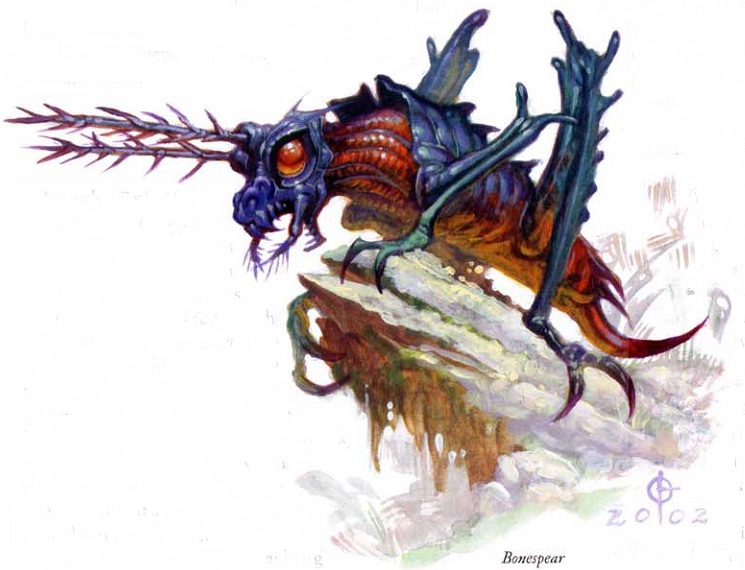

大型虫类（跨位面）

| 生命骰： | 15d8+60（127hp） |
| 先攻： | +3 |
| 速度： | 40英尺 |
| 防御等级： | 27（-1体型，+3敏捷，+15天生），碰触12，措手不及24 |
| 基本攻击／擒抱： | +11/+21 |
| 攻击： | 角抵+16近战或飞角+13远程 |
| 全力攻击： | 2角抵+16近战和啮咬+11近战或2飞角+13远程 |
| 伤害： | 2角2d6+6加毒素；啮咬2d6+3 |
| 面宽／触及： | 10英尺/5英尺 |
| 特殊攻击： | 附接，拖拽，飞角，毒素 |
| 特殊能力： | 快速医疗5,火焰抗力10，不动姿态，音波抗力10，法术抗性23，虫类特性 |
| 豁免： | 强韧+13，反射+8，意志+6 |
| 属性： | 力量22，敏捷17，体质19，智力-，感知12，魅力10 |
| 地域： | 任意地表或地底（阿喀戎修罗场） |
| 组织： | 单独，成对或群（4-8） |
| 挑战等级： | 12 |
| 宝物： | 1/2钱币；50%商品；50%物品 |
| 阵营： | 总是中立 |
| 进化： | 16-30HD（超大型）；31-45HD（巨型） |
骨矛甲虫是在许多不同位面上都有分布的耐心捕食者。以其头上长出的两只带倒钩的长角而得名，对任何被它们当作食物的生物――类别包括大多数会动的所有东西来说这对角都是不折不扣的威胁。它们的故乡位面是阿喀戎修罗场（Acheron），但因其天性坚韧导致骨矛甲虫几乎蔓延分布贯穿了所有位面并且即使是在最不适宜生存的环境下都有所出没。
骨矛甲虫外形类似巨大的蝗虫。它们那暗色的覆甲躯体有8英尺长，站立时到肩部有5英尺高。它们头上顶着一对3英尺长的倒刺长角。只有当该生物开始狩猎时这对角并没有牢牢接附在该生物的头上这个事实才会变得显而易见――连接着头部和角的长肌腱使得骨矛甲虫可以向猎物发射出它的双角并把它们钓过来以供享用。
骨矛甲虫可以连续静坐数日，等待合适的猎物路过。它们一般选取贫瘠，多石的区域来进行它们的捕猎活动，许多骨矛甲虫盘踞在地底。假如超过一周都没有猎物经过的迹象，该生物就会离开直至它们找到食物源。
在骨矛甲虫寻找食物时其反应十分迅捷。只要目标进入60英尺内，骨矛甲虫就会对其射出它全部的角然后尝试通过收回连接着角与头部的坚韧肌腱将猎物钓过来。
附接（Attach）（特异能力）：如果骨矛甲虫的一次角攻击命中，角就会插入目标体内，通过角表面上的众多倒钩固定在目标上。此后被角穿刺着的生物每轮都会额外自动受到角伤害并且会在攻击掷骰，豁免和技能检定上受到累积的-1环境减值。在接下来骨矛甲虫的轮中，它会尝试将其猎物拉过来（见下文）。
用挥砍武器对肌腱做的单次攻击（如同做一次击破武器尝试）造成至少15点伤害的会将角从其肌腱上砍下来。被砍下来的角穿刺着的生物每轮自动受到1d6点伤害直至该角被移除。移除一只角（一个整轮动作）会对受害者造成2d8点伤害，但假如移除角的角色成功通过一次医疗检定（DC 20），该伤害会降至1d4点。
拖拽（Drag）：在刺穿受害者后，骨矛甲虫可以尝试在接下来的轮中每次轮到骨矛甲虫行动时将受害者拖近。该行为类似冲撞动作，除了骨矛甲虫会将它的受害者拖近10英尺+1英尺每点超出受害者的它的力量检定点数。骨矛甲虫会在它的拖拽检定上获得+4加值假如它采用它的不动姿态的话。对于中型受害者，骨矛甲虫的力量修正值是+10，假如采用不动姿态的话是+14。
骨矛甲虫可以在同一轮中在10英尺或更近距离内拖拽生物并以攻击掷骰上获得+4加值啮咬。
飞角（Horns）（特异能力）：大多数遭遇都以骨矛甲虫射出它的两只角开始。假如角射失了原本打算的目标，它会很快被收回去。收回角是一个整轮动作。每只角都有60英尺射程（没有射程增量）。骨矛甲虫总是会尝试用全部双角命中单一目标，但其事实上是可以同时附接两个不同目标的。
毒素（Poison）（特异能力）：骨矛甲虫通过每次成功的角攻击来投递它的毒素（强韧豁免DC 25过则无效）。对第一种角攻击的初次和二次伤害是2d4敏捷。对第二种角攻击的初次和二次伤害是2d4力量。
快速医疗（Fast Healing）（特异能力）：骨矛甲虫以5点每轮的速度恢复失去的生命值。快速医疗无法回复因饥饿，干渴或是窒息造成的生命值损失，并且其不能让骨矛甲虫重新长出或是重新附接失去的肢体。
不动姿态（Immobile Stance）（特异能力）：任意，骨矛甲虫可以通过用它那六条巨大的强壮腿足将它自己锚定在地表来使得它自己变得几乎无法被移动。在该姿态下，骨矛甲虫在抵抗冲撞或是其他强制移动的行为的对抗力量检定上获得+20稳固（stability）加值，并且其无法被闯越。（该加值会与因拥有超过两条腿足而获得的+4稳固加值重叠（不累计）。）该能力可以以一个自由动作被激活或停止。
虫类特性（Vermin Traits）：骨矛甲虫免疫所有影响心灵效果（魅惑、胁迫、魅影幻觉、心灵幻觉和士气效果）。它还有黑暗视觉（60英尺范围）。